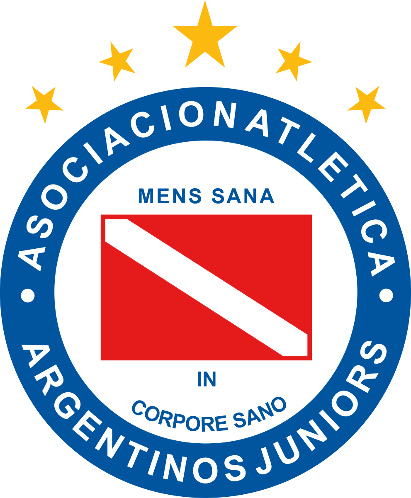
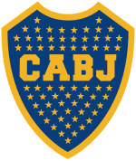
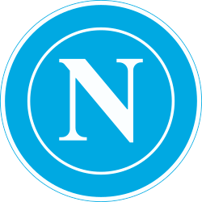
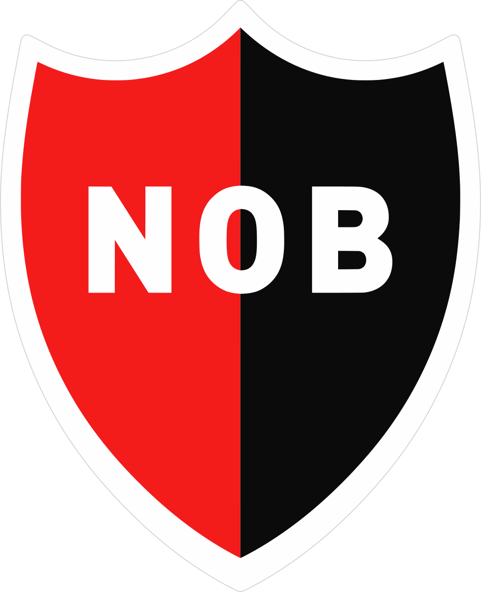

Diego Maradonna
Légende du Football
"By some distance the best player of my generation and arguably the greatest of all time."
- Gary Lineker, journaliste et ex-footballeur
Biographie
Diego Armando Maradona est né le 30 octobre 1960 à Lanús, près de Buenos Aires. À seulement 16 ans, il rejoint Argentinos Juniors, puis les plus grands clubs de football comme le FC Barcelone et surtout le Napoli (club Italien), où il devient une légende. En 1986, il conduit l’équipe d’Argentine à la victoire en Coupe du Monde. Maradona est passionné, il continue sa carrière sportive et devient même entraîneur, jusqu’à sa mort le 25 novembre 2020. Il demeure aujourd’hui une icône mondiale du football.
Clubs

AA Argentinos
Juniors
1976-1981
Juniors
1976-1981

CA Boca
Juniors
1981-1982
Juniors
1981-1982
 FC
FCBarcelone
1982-1984

SSC Calcio
Napoli
1984-1992
Napoli
1984-1992
 FC
FCSeville
1992-1993

Newell'ss
old boys
1993
old boys
1993
Palmarès